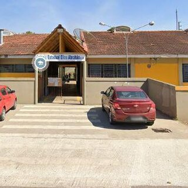

Nossa trajetória
História do colégio
Uma escola construída junto com a comunidade do Jardim Menino Deus, em Quatro Barras.

Desde o início
Como tudo começou
O Colégio Estadual Elias Abrahão foi fundado em [ano de fundação] para atender as famílias do Jardim Menino Deus e dos bairros vizinhos de Quatro Barras. O nome homenageia [quem foi Elias Abrahão].
Com o crescimento da comunidade, a escola ampliou sua estrutura e passou a oferecer também o Ensino Médio e cursos técnicos, além de investir em acessibilidade, tecnologia e sustentabilidade.
Ao aderir ao programa de Colégios Cívico-Militares do Paraná, a escola reforçou valores como disciplina, respeito e cidadania, sem deixar de lado a qualidade do ensino.
Linha do tempo
Momentos marcantes
-
[ano]
Fundação
Início das atividades com turmas do Ensino Fundamental.
-
[ano]
Ensino Médio
A escola passa a oferecer o Ensino Médio, tornando-se colégio.
-
[ano]
Cursos técnicos
Início dos cursos de Desenvolvimento de Sistemas, Informática e PCP.
-
[ano]
Colégio Cívico-Militar
Adesão ao programa de Colégios Cívico-Militares do Paraná.